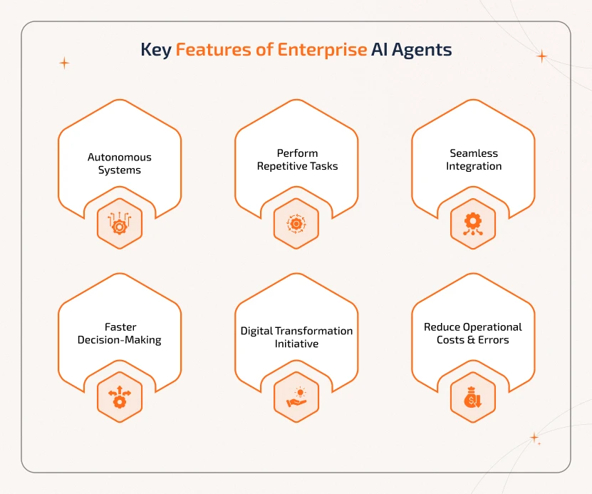
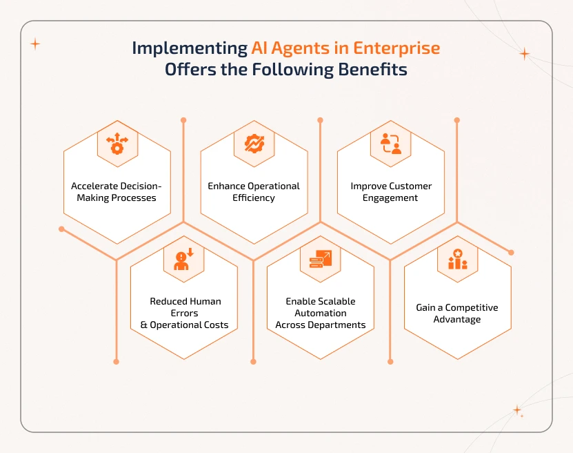
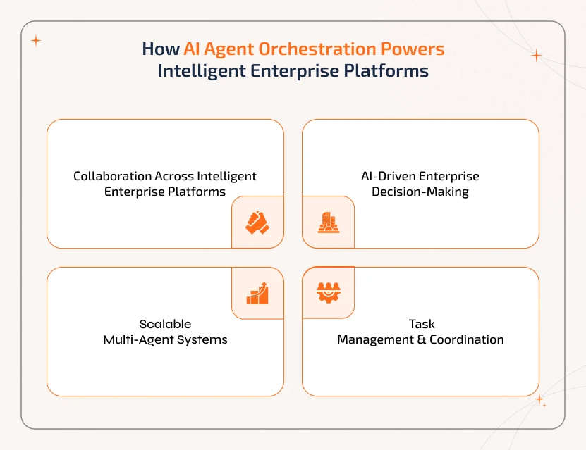
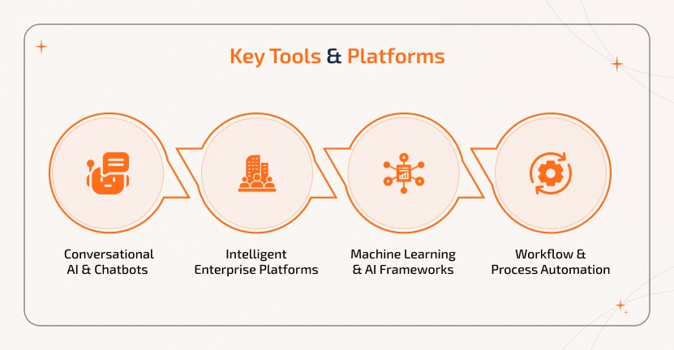

Considering the advantages of Artificial Intelligence, businesses across industries are leveraging it to maximize operational efficiency, automate tasks, and reduce overall costs. In this context, AI agents in enterprises are changing the way they operate. From building AI agents for customer support to handling internal operations and anything in between, AI-powered enterprise solutions are powering businesses and transforming them to stay ahead in the competitive landscape. Whether you run a large enterprise or are looking to expand your business operations, you should understand how AI agents in enterprise work and help unlock new opportunities. AI Agents for Enterprises help accelerate enterprise transformation initiatives and drive higher productivity. Read this blog to explore every key concept behind the enterprise AI agent, a transformative technology.
What Are Enterprise AI Agents?
Enterprise AI agents are autonomous software programs that are designed to perform specific tasks within business environments. They will work as intelligent agents in an enterprise that can automate tasks, analyse data, and enhance decision-making. With advanced LLMs support, these agents work beyond traditional automation tools. i.e., Even without the constant human intervention, these agents are capable of performing business-specific objectives without constant human oversight. Hence, they form the backbone of AI-powered enterprise chatbot solutions and AI enterprise applications. Enterprise AI agents for transformation modernize traditional workflows and accelerate growth across functions. Businesses leveraging these agents will work smarter and faster.
1. Reason - They process the information, analyse the patterns, and use AI-driven logic to understand the problems, predict results, and thereby recommend the best solutions.
2. Act - Just beyond analysis, these agents can perform various tasks such as automating workflows, responding to customer queries, and optimizing operations in real time.
3. Collaborate - AI agents will not work in isolation. Rather, they interact with other systems, teams, and even with other agents to make coordinated business processes.

1. Autonomous Systems - They continuously improve performance through learning and data-driven decisions.
2. Perform Repetitive Tasks - Efficiently handles repetitive and complex tasks with speed and accuracy.
3. Seamless Integration - They will embed and work alongside the existing enterprise platforms like CRMs, ERPs, and other business systems.
4. Faster Decision-Making - With AI-driven insights, enterprise AI agents will offer actionable insights to guide on strategic choices.
5. Digital Transformation Initiative - These enterprise agents will help businesses to modernize the workflows and adopt AI-driven operations.This is why AI agents for enterprises are now becoming an essential entity in digital transformation strategies.
6. Reduce Operational Costs & Errors - Enterprise agents minimize the human errors while improving efficiency and ROI.
How AI Agents in Enterprise Work Behind the Scenes?
In today's tech world, enterprise AI agents work more like advanced digital assistants in optimizing workflows and streamlining operations. Besides automating repetitive tasks, they make intelligent decisions.
By combining conversational AI in enterprises with enterprise automation, these systems work as powerful AI agents for corporate solutions. This opens up the possibility for organizations to achieve improved efficiency, agility, and smarter resource management.
AI automation in enterprise is becoming a key to digital transformation as it helps organizations improve efficiency, agility, and smarter resource management.
1. Data ingestion & analysis from multiple sources
These agents collect and process the data from databases, applications, and external
systems to produce actionable insights.
2. Machine learning for predictive analytics
Used to
predict the trends, find anomalies, and offer suggestions for better decisions.
3. Natural Language Processing for Communication
This enabled human-like interactions for employees and customers to improve
engagement.
4. Integration with ERP, CRM, & Business Tools
Offers unified operations by seamlessly connecting with enterprise platforms.
5. Multi-agent collaboration for complex tasks
Enterprise AI agents work alongside other AI agents to manage cross-departmental or
multi-step processes.
6. Continuous learning for better performance
By adapting and evolving with changing business needs it ensures ongoing efficiency.
Why are AI Agents in Enterprises Essential Today?
In the ever-evolving business landscape, AI agents are not just a tech advancement; they are a strategic imperative. Thus, businesses are increasingly integrating AI agents with the help of AI agent development companies to enhance customer experience, streamline operations, and stay ahead of the competitive market. According to a 2026 survey by PwC, it is found that about 79% of companies have started using AI agents already, with two-thirds reporting measurable success through increased productivity.

1. Accelerate Decision-Making Processes
AI agents offer
real-time data analysis and thus enable faster and more informed decision-making. A
SnapLogic study shows that about
92% of business leaders are confident that AI agents will deliver meaningful
outcomes in the next 12-18 months.
2. Enhance Operational Efficiency
AI agents free up human
resources for more complex and strategic activities by automating repetitive,
routine tasks. This improves operational efficiency while saving costs. As per Masterofcode, about 56% of businesses report cost
reductions after adopting AI agents
3.Improve Customer Engagement
AI agents in enterprise
sectors provide personalized interactions with customers. This improves customer
satisfaction and trust. According to PwC, about 54% of companies are
experiencing enhanced CX with AI agent adoption.Thus, AI agents for enterprises are proving to be a competitive advantage across industries.
4. Reduced Human Errors & Operational Costs
AI agents
automate tasks to minimize human errors and reduce operational costs. This is more
common in industries like insurance, where AI agents have led to a 56% reduction in
costs, as per Master of Code.
5. Enable Scalable Automation Across Departments
AI
agents can be deployed across different departments, and this ensures consistent and
scalable automation. As per the Stack-AI report, highlights over
70% of global enterprises use AI in at least one business function, and the
applications are expanding in marketing, sales, customer support, IT, and
operations.
6. Gain a Competitive Advantage
In the digital-first era,
the adoption of AI agents helps enterprises stay ahead of competitors by using
advanced technologies for innovation and efficiency.
By embracing AI agents, businesses across industries can unlock innovation, efficiency, and customer satisfaction.
AI Agents in Enterprise?
Sparkout helps enterprises deploy AI agents that cut costs, boost efficiency & deliver smarter decisions.
Different Types of AI Agents in Enterprises & How They Work
In the enterprise sectors, different types of AI agents play a vital role in enhancing efficiency, automating tasks, and supporting smarter decision-making. Understanding the types of AI agents in enterprises helps organizations implement the desired solutions for their operations.
1. Reflex Agents - These are AI agents that can handle simple condition-action rules. Thus, they are ideal to perform routine tasks with a clear description, like alert generation or basic monitoring.
2. Goal-Based Agents - They are capable of planning and adapting strategies to achieve specific goals. Hence, they work best for handling complex enterprise scenarios like project management or dynamic workflow optimization.
3. Utility-Based Agents - These are agents that can evaluate multiple options against predefined criteria and optimize decisions based on priorities like performance, efficiency, and cost.
4. Multi-Agent Systems - It involves multiple specialized agents that work together to manage complex, cross-departmental work. This includes enterprise resource planning, supply chain management, etc.
5. Copilots - These are agents that assist humans by providing suggestions and insights. They enhance productivity in tasks like content creation, customer support, code development, etc.
6. Autonomous AI Agents - They are capable of executing tasks on their own, independently within defined parameters. This includes inventory management, scheduling, and repetitive operational processes.
These are the types of enterprise AI agents that are transforming how businesses operate. Upon choosing the right AI autonomous agents in enterprise examples, organizations can optimise AI agents in enterprise operations, reduce errors, and boost innovation across departments.
How AI Agent Orchestration Powers Intelligent Enterprise Platforms
Most often, AI agents work in collaboration through orchestration. i.e., they work with multiple intelligent agents in enterprise environments to complete complex workflows. This approach ensures that each agent contributes seamlessly, no matter if they are handling data analysis, customer interactions, or automation tasks.

1. Collaboration Across Intelligent Enterprise Platforms Orchestration frameworks help agents to connect with CRM, ERP, and other enterprise systems.
2. AI-Driven Enterprise Decision-Making AI agents share insights and thus support enterprise leaders with accurate, real-time recommendations for strategic decision-making.
3. Task Management & Coordination Orchestration ensures that the tasks are assigned, monitored, and completed efficiently across all departments.
4. Scalable Multi-Agent Systems Multiple agents will adapt to changing business needs, and that covers AI agents for customer service automation to supply chain optimization, and so on.
Consider AI agents in enterprise examples, such as in the supply chain, one AI agent will monitor the inventory,while the other tracks the logistics, and another analyzes the market demand. Through orchestration, these agents collaborate seamlessly and ensure stock levels are appropriate while reducing delivery delays and offering smarter purchasing decision support.AI agents for enterprises excel in orchestrated environments and thus enable connected digital ecosystems.
Common Roadblocks & Practical Solutions of Enterprise AI Agent
Although AI-powered enterprise solutions come with advantages, organizations will come across some challenges when deploying smart agents in business operations. These challenges range from technical integration to employee adoption, and so on. It is vital to address them with the right strategies to ensure smooth deployment and long-term ROI.
Challenge 1: Data Silos
Solution: Silos can be
broken with centralized AI systems that allow the agents to access real-time data
across departments.
Challenge 2: Compliance
Solution: Enterprises
can ensure sensitive data is handled safely by adopting robust security and
compliance frameworks.
Challenge 3: Scalability
Solution: Using cloud
infrastructure makes it easier to scale AI agents when business needs grow, all
without heavy hardware costs.
Challenge 4: Employee Adoption
Solution: By
choosing user-friendly and intuitive agent interfaces, teams can easily embrace AI
agents, and thus, handling everyday operations becomes smoother.
Challenge 5: Maintenance
Solution: Ongoing
updates and self learning models will keep the agents delivering accurate, precise,
and relevant results over time.
Challenge 6: Integration
Solution: APIs support seamless integration of AI agents into the existing
business systems and thus ensure streamlined operations.
How to Build AI Agents That Optimize Enterprise Workflows
Building effective autonomous AI agents for corporate solutions involves more than just technology. i.e., this demands careful planning, strategy, and alignment with business objectives. When the agents are properly designed, they enable enterprise automation with AI, streamline processes, and support AI agents for workflow optimization on all departments.
Step: 1 Define Clear Business Objectives
Start by
identifying the problems the AI agent should efficiently solve or the processes it
should enhance. Setting up clear goals is essential to measuring success and
ensuring that AI efforts align with broader enterprise strategies.
Step: 2 Start with Small, Manageable Pilots
It is vital
to begin with a limited deployment to test the agent’s capabilities, collect
feedback, and refine its performance. Working with pilots reduces risk and provides
insights even before scaling to full operations.
Step: 3 Ensure Data Quality & Governance
AI agents rely
on accurate, clean, and well-structured data. Thus, developing strong data
governance practices ensures that the AI produces reliable insights and helps
minimize errors caused by poor-quality information.
Step: 4 Use Modular, Scalable Architectures
Designing
agents as independent and flexible modular components helps enterprises expand
capabilities, integrate new systems, or update features without disrupting existing
workflows.
Step: 5 Implement Continuous Monitoring
By tracking the
agent’s performance in real-time, it is easy to detect anomalies, evaluate
effectiveness, and iteratively improve behaviour. This ensures long-term reliability
and adaptability.
Step: 6 Focus on User-Friendly Design
A simple, intuitive
interface helps its adoption among employees, making it easier to interact with AI
agents and leverage their full potential.
By following all these essential practices, businesses can develop AI agents that not only optimize workflows and automate tasks but also integrate smoothly into enterprise systems, improve efficiency, and deliver measurable business outcomes.
Connect with us to design and deploys custom AI agents in enterprise that follow best practices & deliver measurable ROI.
The Role of Enterprise AI Agents in Transforming Modern Enterprises
Enterprise AI agents for transformation are becoming the backbone of modern business operations. They are in turn helping companies to switch from manual workflows and legacy systems into AI-driven automation. With this, they are able to make faster, smarter, and data-driven decisions.
Get to know how these agent improve business operations:
1. AI-First Decision-Making
These agents can look into a large volume of data and give real-time insights to business users. Thus, reduces dependency on manual approvals and outdated reports.
2. Cloud & API-Centric Integration
Enterprise AI agents can connect with CRMs, ERPs, data warehouses, and SaaS platforms. Thus eliminating the silos and improving visibility.
3. Smarter Workflow Automation
These agents can learn and optimize processes continuously to make operations faster and more resilient over time.
Overall, enterprise agents automate operations across different industries and helps unlock unified transformation strategy. They also strengthen the enterprise agility in competitive markets.
Real-World Use Cases of AI Agents in Enterprises
Enterprise AI agents are reshaping industries in the current era and thus bringing in measurable business impacts. Some of them are as listed below:
1. Customer Support
Agents automates resolutions, agent assistance, and sentiment analysis to reduce the wait times and improve satisfaction.
2. Finance
Used to detect the fraudulence activity instantly, speeds up claims and invoicing, and improves expenses.
3. Supply Chain
Agents can track shipment, predict demands, and reduces inventory waste with real-time analytics.
4. Human Resources
Handles candidate screening, automates onboarding process, and improves employee query support.
5. IT Operations
With the self-healing agents, it is possible to detect and fix system issues automatically. This, in turn, reduces the downtime.
6. Retail & eCommerce
By using demand intelligence and personalization, agents increase the conversions and optimize the logistics.
How AI Agents for Enterprises Increase ROI
Organizations are increasingly adopting the enterprise AI agents as they are delivering faster and measurable financial outcomes.
Here is how they achieve the desired ROI:
- Bots handle repeated tasks 45-50% faster and this reduces manual workload and boosts team productivity.
- Upto 60% reduction in operational cost as AI agents eliminates repeated works, reduces errors and lowers process complexities.
- AI-driven personalization and instant support improves trust and long-term customer satisfaction.
- With improved data accuracy and compliance, businesses can take stronger decisions with reduced regulatory exposure.
Top Tools & Platforms for Building Enterprise AI Agents
Building efficient AI agents in enterprise operations requires the right set of enterprise AI tools and platforms. With this, the organizations can design, deploy, and manage intelligent agents that can automate workflows, improve business efficiency, and enhance decision-making.

1. Conversational AI & Chatbots
- Google AI Agent Builder – To build chatbots & conversational agents.
- Rasa – Open-source framework for custom conversational AI.
- Botpress – Platform to build AI-powered chatbots and AI voice agents.
- IBM Watson Assistant – To build conversational AI for enterprise-grade solutions.
2. Intelligent Enterprise Platforms
- SAP AI – Integrates AI agents into ERP and enterprise systems.
- Microsoft Azure AI – Cloud-based AI services and frameworks.
- IBM Watson – AI platform for analytics, automation, and decision-making.
3. Machine Learning & AI Frameworks
- TensorFlow – Open-source ML framework for building intelligent agents.
- PyTorch – Flexible ML framework for custom AI solutions.
4. Workflow & Process Automation
- UiPath – With AI agents, automates repetitive business processes.
- Automation Anywhere – It is an enterprise-grade robotic process automation (RPA) platform.
- Blue Prism – AI-powered RPA for large-scale automation projects.
How AI Agents Are Shaping the Future of Enterprise Operations
The future of business lies with the AI agents in enterprise that are smarter, more collaborative, and are capable of driving significant transformation. Emerging trends imply that there is a shift towards multi-agent collaboration where multiple smart agents coordinate to optimize workflows and handle complex processes. With advanced analytics, AI agents offer deeper insights and predictive decision-making. Whereas the self-learning systems adapt to evolving business needs, improve efficiency, and outcomes over time.
By adopting all these innovations, organizations can leverage AI agents for digital transformation, optimize AI agents in enterprise operations, and stay ahead in a competitive landscape.
Why Choose Sparkout for AI Agents in Enterprise Development?
Implementing AI agents in enterprise operations requires the right partner and that makes all the difference. At Sparkout, our experts build tailored AI-powered enterprise solutions that align with your business goals. As a trusted enterprise AI agent development company, Sparkout ensures future scalability and maximizes ROI.
Here is why global enterprises trust Sparkout:
1. As a leading enterprise AI development company, Sparkout has a team with deep experience across industries.
2. Hire AI agent developers from Sparkout to design intelligent agents in the enterprise that are customized to your unique workflows.
3. With years of experience, experts handle smooth deployment with your existing systems like CRM, ERP, and other business platforms.
4. The team of experts handles the complex AI lifecycle from strategy to maintenance and everything in between.
5. AI agents developed at Sparkout evolve with your business needs and industry requirements.
6. Sparkout ensures enterprise-grade security, compliance, and governance while delivering AI agents for business.
Partner with Sparkout to build smart, scalable AI agents that cut costs & optimize workflows.